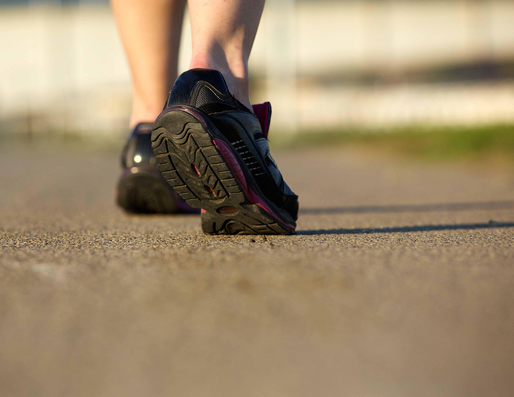
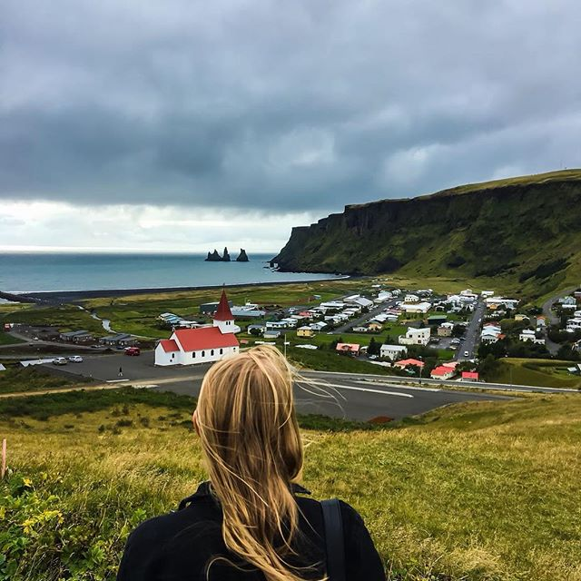
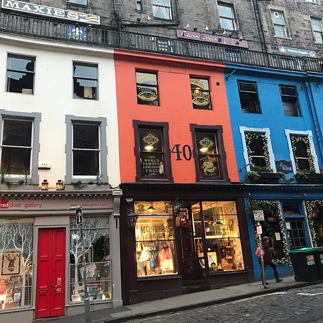
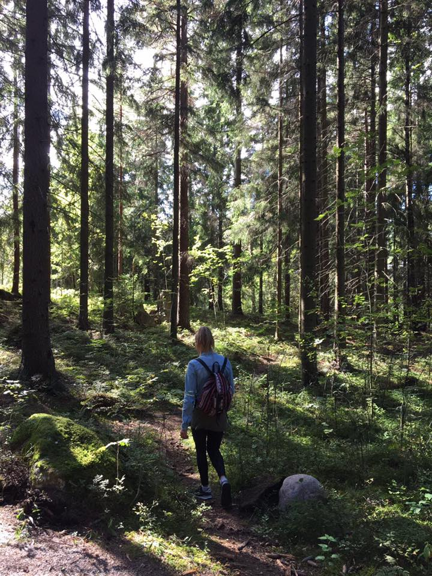

Cooking

I love cooking and experimenting with new recipes. During my study "Nutrition" I learned alot about different diets. I did try a couple, but to be honest dieting is not my thing. I just want to eat what I love and I don't like destrictions. I do try to eat vegetables with every meal and try to avoid processed foods and sugar as much as possible. When it comes to meat I always choose for biological.
I love to
travel, cook, work out and play videogames
Stay Fit
To me it's very important to keep fit and healthy. Because I have been going through some health issues, I'm trying to do anything to keep as fit as possible.
Going to the gym, practicing yoga, or taking a run is definitely included in my weekly routine. My rule is to do this at least 3 times a week, and preferably 5. It keeps you more focussed and succesful at work, and you feel more happy in general.
After my workout I mostly to take a hot sauna at my gym.
Traveling
I've been traveling quit some times with my fiancé. Last year we have been to cold places such as Iceland and Scotland. We absolutely loved Scandinavian countries. Maybe also because I'm half Finnisch myself. The left picture was made in Iceland in the village Vik, the middle picture was made in Edinburgh in one of the most colourful streets, and the last one in the forests of Finland.
  Videogames
Something that completely relaxes me is playing videogames. But I'm specific with the kind of games I play. I'm most font of games where you have to create and build, such as: Tropico, The Sims and City Skylines. But I also like games with a good storyline such as Senua's Sacrafice and Red Dead Redemption. My favourite survival game is The Long Dark.